Sports
Abhinav Bindra
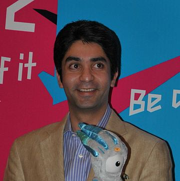
Abhinav Bindra (born 28 September 1982 in Dehradun, Uttarakhand, India) is an Indian businessman and retired professional shooter who is a former World and Olympic champion in the 10 metre Air Rifle event. By winning the gold in the 10 metre Air Rifle event at the 2008 Beijing Olympic Games, he became the first
Indian to win an individual gold medal at the Olympic Games. It was also India's first gold medal since 1980, when the Men's Field Hockey Team won the gold.
He is the first and only Indian to have held both the World and Olympic titles at the same time, a feat he accomplished by capturing the Gold Medal at the 2008 Olympic Games in Beijing, after having won the gold at the 2006 ISSF World Shooting Championships. Bindra also won the Gold Medal at the 2014 Commonwealth Games in Glasgow. In May 2016, the Indian Olympics Association (IOA) appointed Abhinav Bindra as the Goodwill Ambassador for Rio 2016 Olympic Games Indian Contingent. In the Rio 2016 Summer Olympics, Bindra finished 4th in the finals of the 10 metre Air Rifle Event. On 5 September, 2016, Abhinav Bindra announced his retirement to give way to the younger generation. He was the Flag Bearer for the Indian Contingent at the 2016 Rio Olympics. He studied
at The Doon School for two years. Bindra was also the youngest Indian participant at the 2000 Olympic Games. He won six gold medals at various international
meets in 2001. In 2000 he was honoured with the Arjuna Award, the prestigious Rajiv Gandhi Khel Ratna award in 2002 (India's Highest Sports Award) and the Padma Bhushan (India's Third Highest Civilian Award) in 2009. In 2011 he was awarded with the Honorary Lieutenant Colonel by the Indian Territorial Army.
Bachendri Pal
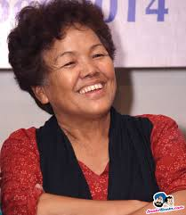
Bachendri Pal (born 24 May 1954) is an Indian mountaineer, who in 1984 became the first Indian woman to reach the summit of Mount Everest. She was born on 24 May 1954 in a village in the Himalayas named Nakuri in Uttarkashi, District of Garhwal, what is now Uttarakhand. She completed her M.A. and B.Ed. from D.A.V.Post Graduate College Dehradun. She got her first taste of mountaineering thrill at the age of 12, when she, along with her friends, scaled a 13,123 ft (3,999.9 m) high peak during a school picnic. On the invitation of her school principal, she was sent to college for higher studies and became the first girl to 1982, during her course at NIM, she climbed Mt. Gangotri 21,900 ft (6,675.1 m) and Mt. Rudragaria 19,091 ft (5,818.9 m). In that time, she got employment as an instructor at the National Adventure Foundation (NAF), which had set up an adventure school for training women to learn mountaineering. In 1984, India had scheduled its fourth expedition, christened Everest'84, to Mount Everest. Bachendri Pal was selected as one of the members of the elite group of six Indian women and eleven men who were privileged to attempt an ascent to the Mount Everest. On 23 May 1984, the team reached the summit of Mount
Everest at 1:07 p.m. IST and Bachendri Pal created history. She achieved this feat on the day before her 30th birthday, and six days before the 31st anniversary of the first ascension to Mount Everest. She has awarded with many awards: Gold Medal for Excellence in Mountaineering by the Indian
Mountaineering Foundation (1984),Padma Shri – the fourth highest civilian award in the Republic of India (1984), Arjuna Award by the Government of India
(1986), Listed in the Guinness Book of World Records (1990), Honorary Doctorate from the Hemwati Nandan Bahuguna Garhwal University (formerly known as Garhwal University) (1997).
MS Dhoni
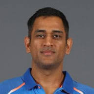
Mahendra Singh Dhoni (commonly known as MS Dhoni; born 7 July 1981) is an Indian international cricketer who captained the Indian national team in limited-overs formats from 2007 to 2016 and in Test cricket from 2008 to 2014. An attacking right-handed middle-order batsman and wicket-keeper, he is widely regarded as one of the greatest finishers in limited-overs cricket. He is also regarded as one of the best wicket-keepers in world cricket and is known to have very fast hands. Dhoni was born in Ranchi, Bihar (now in Jharkhand), and he identifies as a Hindu Rajput. His paternal village Lvali is in the
Lamgarha block of the Almora District of Uttarakhand. Dhoni's parents moved from Uttarakhand to Ranchi, where his father Pan Singh worked in junior management positions in MECON. Dhoni has been the recipient of many awards, including the ICC ODI Player of the Year award in 2008 and 2009 (the first player to win the award twice), the Rajiv Gandhi Khel Ratna award in 2007, the Padma Shri, India's fourth highest civilian honour, in 2009 and the Padma Bhushan, India's third highest civilian honour, in 2018. He was named as the captain of the ICC World Test XI in 2009, 2010 and 2013. He has also been selected a record 8 times in ICC World ODI XI teams, 5 times as captain. The Indian Territorial Army conferred the honorary rank of Lieutenant Colonel to
Dhoni on 1 November 2011. He is the second Indian cricketer after Kapil Dev to receive this honour. Dhoni also holds numerous captaincy records such as the most wins by an Indian captain in Tests, ODIs and T20Is, and most back-to-back wins by an Indian captain in ODIs. He took over the ODI captaincy from Rahul Dravid in 2007 and led the team to its first-ever bilateral ODI series wins in Sri Lanka and New Zealand. Under his captaincy, India won the 2007 ICC World Twenty20, the CB Series of 2007–08, the 2010 Asia Cup, the 2011 ICC Cricket World Cup and the 2013 ICC Champions Trophy. In the final of the 2011 World Cup,
Dhoni scored 91 not out off 79 balls handing India the victory for which he was awarded the Man of the Match. In June 2013, when India defeated England in the final of the Champions Trophy in England, Dhoni became the first captain to win all three ICC limited-overs trophies (World Cup, Champions Trophy and the World Twenty20). After taking up the Test captaincy in 2008, he led the team to series wins in New Zealand and West Indies, and the Border-Gavaskar Trophy in 2008, 2010 and 2013. In 2009, Dhoni also led the Indian team to number one position for the first time in the ICC Test rankings. In 2013, under his captaincy, India became the first team in more than 40 years to whitewash Australia in a Test series. In the Indian Premier League, he captained the Chennai Super Kings to victory at the 2010 and 2011 seasons, along with wins in the 2010 and 2014 editions of Champions League Twenty20. He announced his retirement from Tests on 30 December 2014. In 2011, Time magazine included Dhoni in its annual Time 100 list as one of the "Most Influential People in the World." In 2012, SportsPro rated Dhoni as the sixteenth most marketable athlete in the world. In June 2015, Forbes ranked Dhoni at 23rd in the list of highest paid athletes in the world, estimating his earnings at US$31 million. In 2016, a biopic M.S. Dhoni: The Untold Story was made about him.
Dhoni holds the post of Vice-President of India Cements Ltd., after resigning from Air India. India Cements is the owner of the IPL team Chennai Super Kings, and Dhoni has been its captain since the first IPL season. Dhoni is the co-owner of Indian Super League team Chennaiyin FC. Dhoni’s Wife Sakshi Rawat
comes from Garhwal district and her parents are settled in Dehradun.
Jaspal Rana
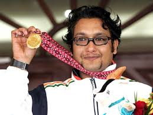
Jaspal Rana (born 28 June 1976) is an Indian shooter. He contested mainly in the 25 m Centre Fire Pistol category. He was a gold medallist at the 1994 Asian
Games, 1998 Commonwealth Games - Men's Center Fire Pistol, Men's Center Fire Pistol Pairs, 2002 Commonwealth Games - Men's 25m Center Fire Pistol, 2006 Commonwealth Games - Men's 25m Center Fire Pistol Pairs, and 2006 Asian Games. At present, Rana coaches at the Jaspal Rana Institute of Education and Technology in Dehradun. Rana was born in a Rajput family in Tehri Garhwal. He grew up in Mussoorie and Dehradun. In 1994, he was awarded Arjuna Award, the second highest award for achievement in sport, by the Indian government at an age of eighteen, by twenty one he became Padma Shri and in between he was awarded National Citizen award by none other than Mother Teresa, other awards of national fame also came his way like windfall.
Manish Pandey
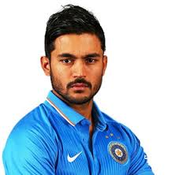
Manish Krishnanand Pandey (born 10 September 1989) is an Indian international cricketer. He is primarily a right-handed middle-order batsman representing Karnataka in domestic cricket and Sunrisers Hyderabad in the IPL. He hails from Nanital, Uttarakhand.
Ekta Bisht
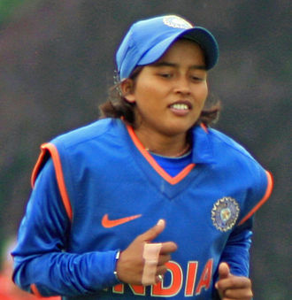
Ekta Bisht is an Indian cricket player. She is left handed batswoman and slow left-arm orthodox bowler.[3][4] She is the first International woman cricketer
from Uttarakhand state of India. Ekta Bisht was born on 8 February 1986 in Almora, Uttarakhand to Kundan Singh Bisht and Tara Bisht. Her father, Kundan Singh Bisht, retired from the Indian Army in 1988 at the rank of Havaldar. Bisht became captain of the Uttarakhand cricket team in 2006. She played for the Uttar Pradesh cricket team from 2007 to 2010. Bisht was selected for the India women's national cricket team in 2011, and made her WODI debut on 2 July 2011
against Australia. On 3 October 2012, Bisht took a hat-trick as India outplayed during match of the ICC World Women Twenty20 played in Colombo, Sri Lanka. India has restricted Sri Lanka to a modest 100 for eight after Bisht claimed a hat-trick in the last over. Bisht was part of the Indian team to reach the final of the 2017 Women's Cricket World Cup where the team lost to England by nine runs. In December 2017, she was named as one of the players in both the ICC Women's ODI Team of the Year and the ICC Women's T20I Team of the Year. She was the only woman named in both squads. In November 2017, the Uttarakhand government decided to confer the year’s Khel Ratna award to bowler Ekta Bisht and Dronacharya award to her coach Liyakat Ali Khan.
Vandana Kataria
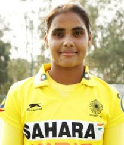
Vandana Kataria (born 15 April 1992) is an Indian field hockey player. She plays as a forward in the Indian national team. Vandana tasted success in 2013 emerging as the country’s top goal-scorer, helping India bag a coveted bronze medal in the Junior Women’ World Cup in Monchengladbach, Germany – her five goals made her the third highest goal-scorer of the tournament. She has cited Argentine Luciana Aymar as her favorite player. Vandana has scored more than 35 goals in 130 appearances for the national team. Hailing from Roshanabad village in Haridwar district, Vandana is one of the most improved players upfront
for India in the last couple of years.
Unmukt Chand
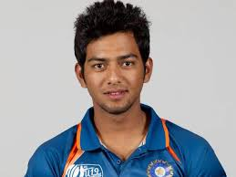
Unmukt Chand (born 26 March 1993) is an Indian cricketer. He is a right-hand batsman who usually opens the batting. He plays for Delhi in Indian domestic cricket tournaments. Chand led the India Under-19 cricket team to the U-19 Cricket World Cup victory in 2012. He hit an unbeaten 111 in the final against Australia in Townsville, winning the praise of Australian great Ian Chappell. Unmukt Chand was born in a Kumaoni Rajput family to Bharat Chand Thakur and Rajeshwari Chand, who are teachers.
Rishabh Pant
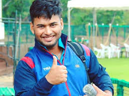
Rishabh Rajendra Pant (born 4 October 1997) is an Indian cricketer who plays for Delhi. In December 2015 he was named in India's squad for the 2016 Under-19
Cricket World Cup.In January 2017 he was named in India's Twenty20 International (T20I) squad for their series against England. He made his debut for India in the third T20I against England at the M. Chinnaswamy Stadium, Bangalore on 1 February 2017. He was the youngest player for India to debut in a T20I match
at the age of 19 years 120 days before Washington Sundar who played at the age of 18 years 80 days made his debut in 2017. He hails from Roorkee and completed his schooling from Roorkee only.
Pawan Negi
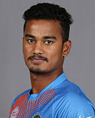
Pawan Negi (born 6 January 1993) is an Indian cricketer. He is a slow left-arm orthodox bowler. He plays for Delhi in the first-class Ranji Trophy competition, and has also played List A and Twenty20 cricket for the team. He made his Twenty20 International debut for India cricket team against the United Arab Emirates cricket team in the 2016 Asia Cup at Sher-e-Bangla National Stadium on 3 March 2016. He was also picked in the Indian squad for ICC T20
World Cup 2016. He was born and brought up in Almora in a Kumaoni Rajput Family.
Parimarjan Negi
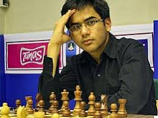
Parimarjan Negi (born 9 February 1993) is an Indian chess grandmaster. He achieved the grandmaster title at the age of 13 years, 4 months, and 20 days, which makes him the third youngest grandmaster in history, behind Sergey Karjakin and Nodirbek Abdusattorov. Negi is a former Indian and Asian champion. He played on the top board for the bronze medal-winning Indian team in the 2014 Chess Olympiad in Tromsø, Norway. He was granted the Arjuna Award in 2010 by the Government of India.